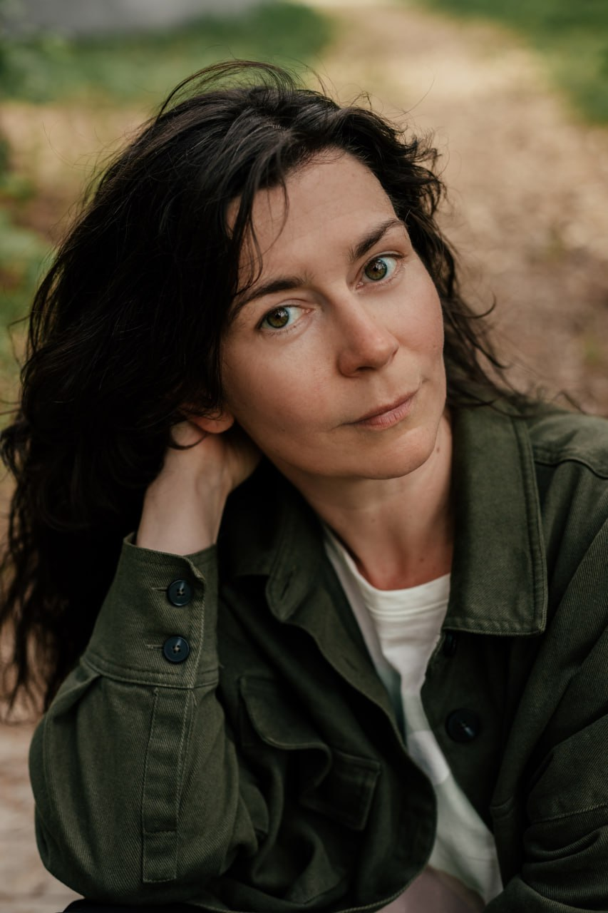
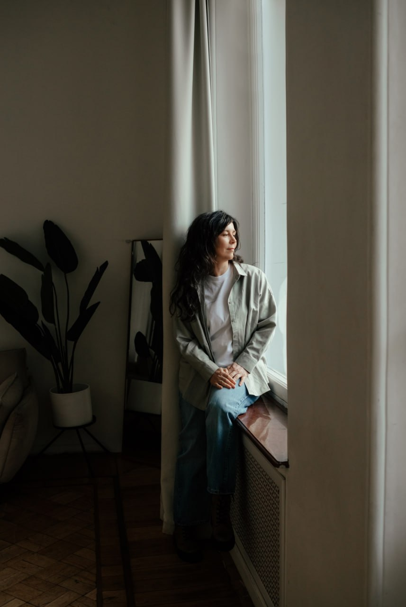
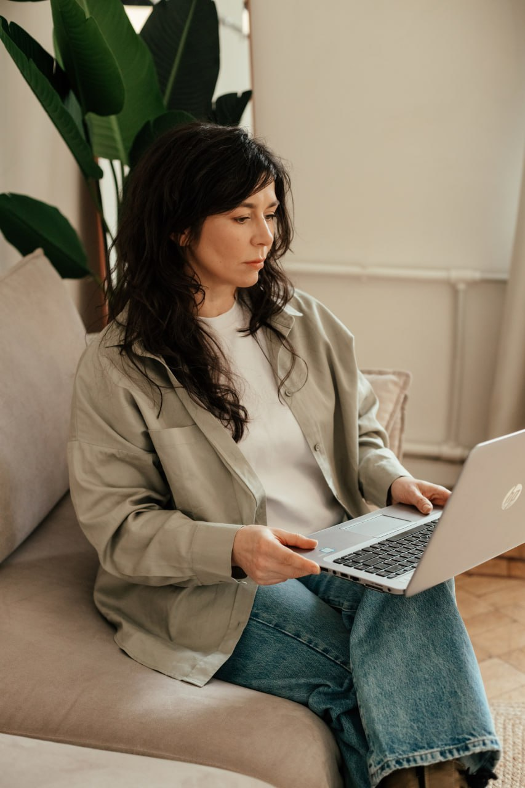

Меня зовут Марина Жулидова, мне 48 лет. Я психолог гуманистического направления, придерживаюсь традиционных взглядов на психотерапевтическую работу. У меня высшее психологическое образование, закончила СПбГУ. Работаю индивидуально со взрослыми старше 25 лет. Регулярно прохожу дополнительные обучения, супервизии и личную психотерапию. Имею дополнительную квалификацию по детско-родительским и семейным отношениям. В настоящее время изучаю экзистенциальный подход в ekzishkola.ru
Основные принципы, которым следую в работе - конфиденциальность, внимательность и интерес к человеку. Провожу консультации онлайн или очно в Петроградском районе Санкт-Петербурга.
Стоимость консультации 3000 рублей за 50 минут.


Немного подробнее о том, что и почему происходит в кабинете психолога. Сессии занимают 50 минут и проходят раз в неделю, длительность всей работы сложно предсказать, она зависит от многих индивидуальных причин.
Часто человек доходит до психолога уже изрядно намучившись и хочет как можно скорее решить вопрос, это можно понять. Как говорится, у меня для вас две новости. Первая: изменениям нужно время. Когда речь идет про эмоциональные переживания, то нет конкретного «органа», который можно «лечить», есть сформировавшиеся в индивидуальных условиях программы и реакции, и потребуется время, чтобы исследовать их, понять, что можно изменить, а с чем нужно научиться комфортно жить. Важно учитывать, что изменения не следуют автоматически после инсайта, психике нужно перестроиться и научиться делать что-то по другому или, наоборот, не делать привычным образом. Вторая новость такая: в результате специально выстроенной совместной работы с психологом человек узнает себя, станет лучше к себе относиться и сможет самостоятельно и осознанно выбирать, действовать и справляться с жизненными задачами.
Во время встречи психолог слушает, задает вопросы, иногда комментирует, изредка может пояснить какие-то моменты, если это важно. У психолога нет задачи, чтобы вы делали что-то определенным «правильным» образом, его цель — помочь вам разобраться в себе, в своих потребностях, чувствах и действовать с опорой на них. Эмоции и чувства - значимые маркеры внешних и внутренних процессов, поэтому часто психолог будет спрашивать, что вы чувствуете или чувствовали, а иногда в комментариях прозвучит его собственный эмоциональный отклик, если, по его мнению, это полезно для клиента.
А вот советов и прямых указаний относительно вашей жизни, даже если этого вам порой хотелось бы, психолог не дает, потому что никто, кроме вас, не знает, как вам было бы лучше поступить. Безоценочность и незаинтересованность в каком-то конкретном поведении — важные критерии качества работы психолога, чтобы не переделывать, а помогать человеку стать самим собой.
Даже если проблема, с которой вы пришли касается исключительно вашей взрослой жизни, психолог будет задавать вопросы о вашем детстве, потому что в раннем возрасте сформировались ваши особенности, реакции, убеждения и привычки, влияющие на ваши действия и переживания сегодня. Детские воспоминания имеют значение, даже если их почти нет. Психика человека развивается во взаимодействии со значимыми людьми, эти отношения накладывают отпечаток на все последующие отношения с собой и другими. И «вылечить» психику изолированно тоже не получится. Главные внутренние конфликты и напряжения проявятся и во взаимодействии с психологом, в кабинете их можно безопасно исследовать и пробовать изменять.
Нет правильных и неправильных тем, чувств и ответов, вы можете говорить все, что считаете нужным и важным и вместе со специалистом исследовать, как это влияет на вашу жизнь.
